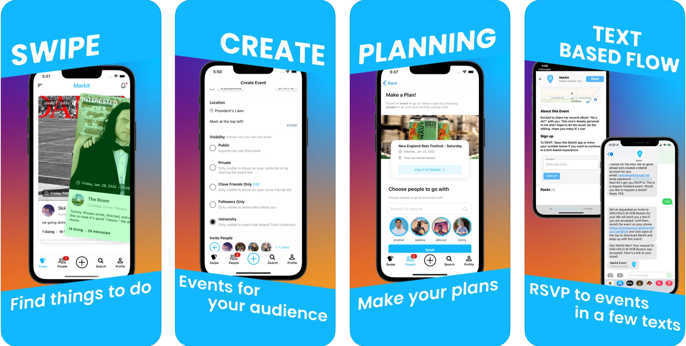
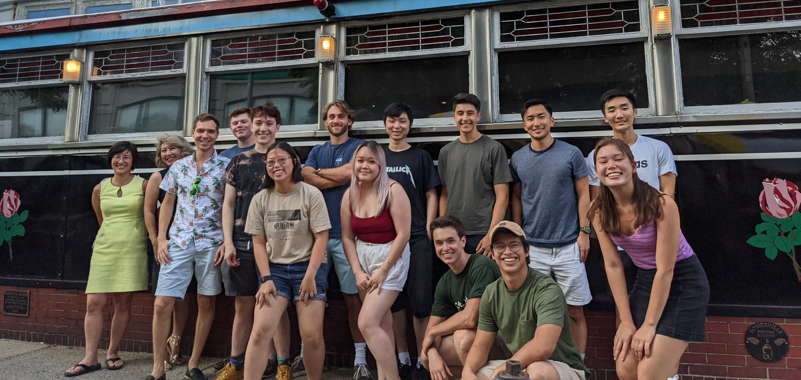
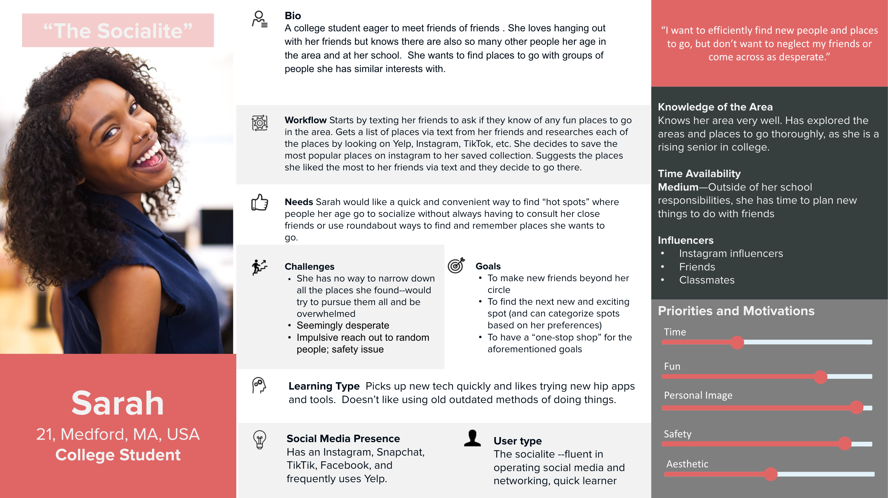
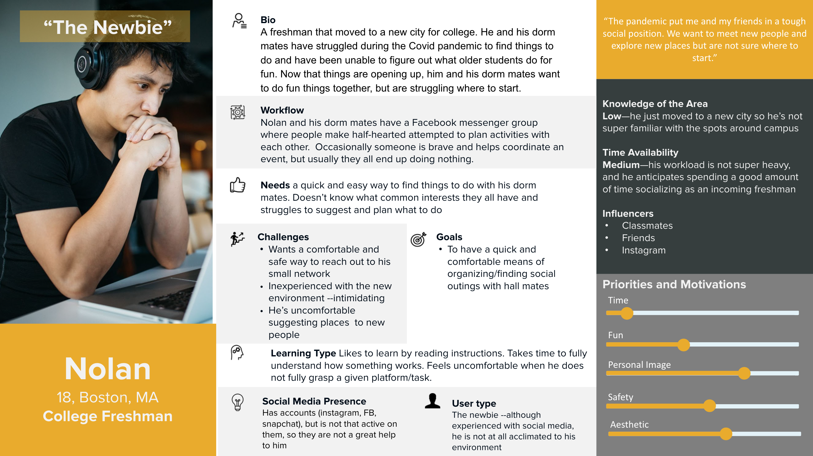
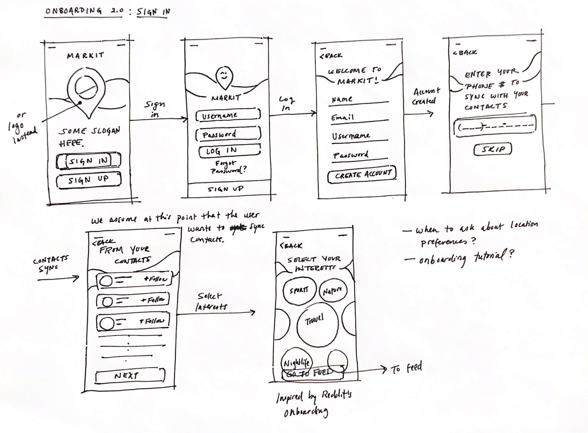
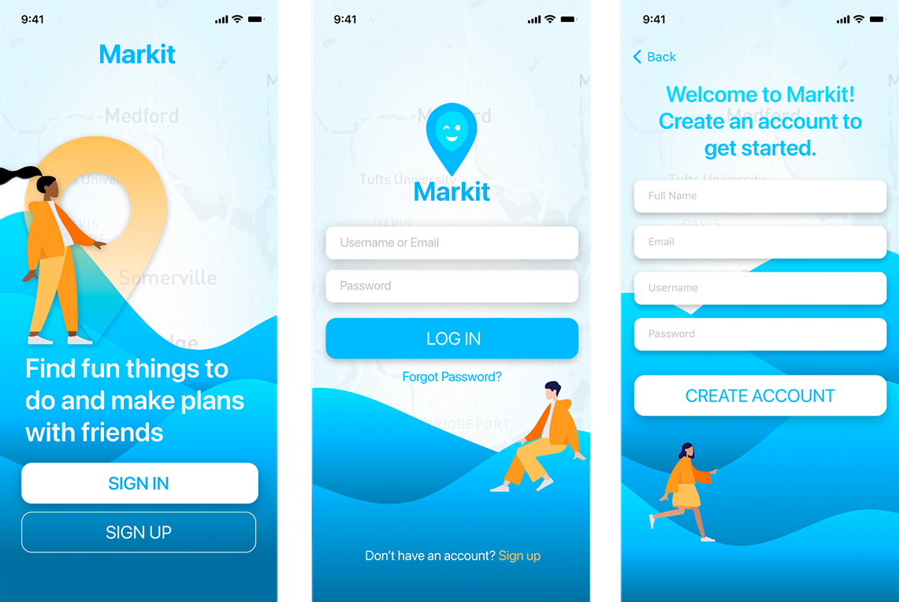
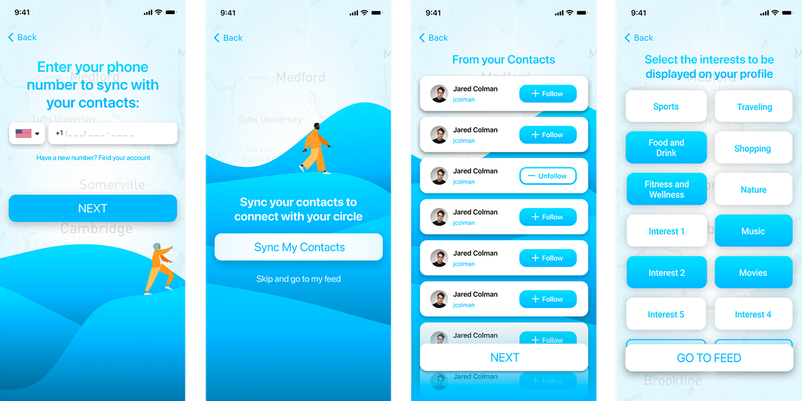

Markit Social, Inc.
Product Development Intern
Jun - Sept 2021Background
Markit Social, Inc. is a new Boston-based social media app that helps young adults find, plan, and attend local events with friends. The app functions similarly to Tinder in that users swipe right or left on their home page to indicate interest in certain events.
Ultimately, Markit is trying to revolutionize the event industry through their all-in-one platform, providing event-goers and event-hosters with a seamless plan-to-action experience.
My Role
I served as one of two Product Development Interns and as a Business Lead. I helped craft Markit's UI by conducting user research, engaging in persona development, wireframing, usability testing, and more.
The Challenge
In light of recent user interviews, Markit’s core value proposition changed. We found that people valued the planning aspect of the original app much more than the app’s previous features. The newfound mission was (and is) to create the ultimate event-planning platform in which users could explore, plan, and attend local events without having to hop between services like Facebook events and Ticketmaster. This pivoted warranted a near-complete redesign of the app.
Revisiting Personas
As a result of such a drastic change in the app's value, we needed to revisit our personas. We changed these personas to reflect the sentiment expressed by so many Markit users during interviews: People want a centralized place for local event-exploration and planning.
 Designing the New UI
A New Onboarding Experience
User Requirements
- The fewer the steps the better. E.g., Users interviewed did not want to complete steps that they deemed "unnecessary."
- The experience must be intuitive/simple.
Solution
I crafted as direct an onboarding experience as possible. I allowed for skippable steps where justified while also acquiring all of the required user input.
  Methods
High-fidelity wireframing (Figma) and user interviews
A Redesigned Homepage
User Requirements
- The home feed must be engaging and spark excitement.
- The home feed must facilitate local event-finding
- The experience must support three key functions: indicating interest, disinterest, or attendance for an event
Solution
After ideating and deliberating, we agreed on a Tinder-esque, card-style home page in which users would be presented with one event at a time, swiping right to indicate interest, left for disinterest, up if the user was going to the event, and tapping for more event details.
Rationale
- This interface fit within our personas' mental models (college students/young adults) who regularly use dating apps like Tinder and Bumble.
- The design was validated via user testing.
Methods
High-fidelity wireframing (Figma), user workflows, and user testing
The Event Calendar
User Requirements
- Users must have a designated place to track upcoming and past events that they are hosting, attending, or are interested in.
- This page should support RSVP and external sharing functions.
Solution
We crafted an event calendar which could be toggled to show events of a certain type in chronological order.
Methods
High-fidelity wireframing (Figma) and user workflows
The Outcome
Markit Social, Inc. provided me with experience in a real, fast-paced agile environment. Since I joined Markit so early into the startup process, I felt as though everything I was working on —from wireframes to business partnerships —was making a tangible impact on the trajectory of the company. While I was at Markit, we managed to grow our user base by more than threefold: almost half of the Tufts University student body was using the app. Now Markit has expanded to other universities like Northeastern and Duke.